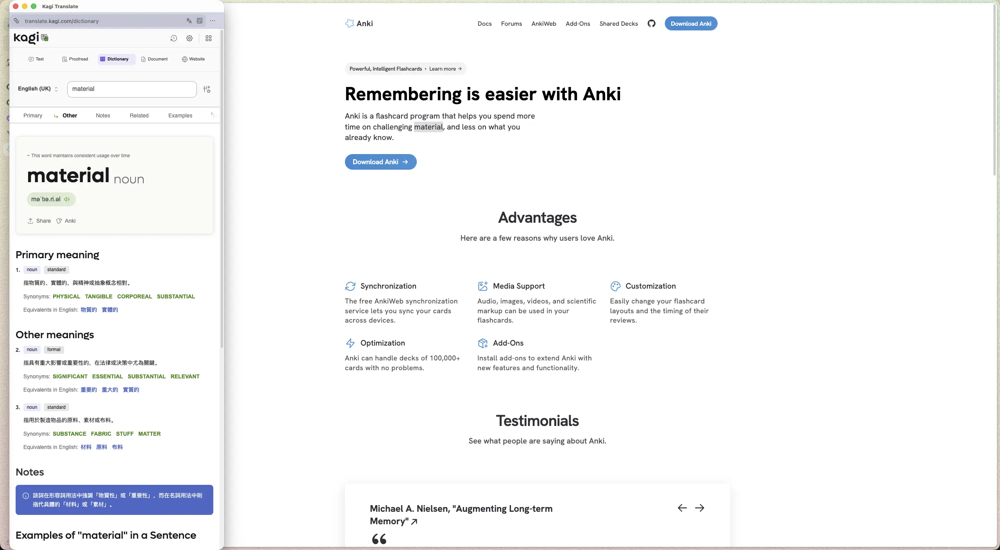
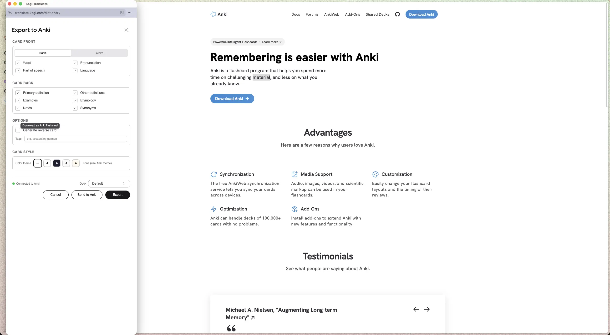
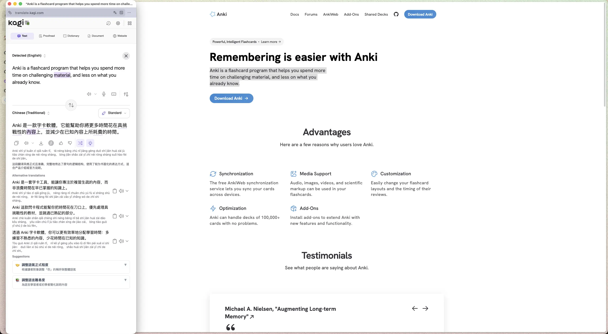
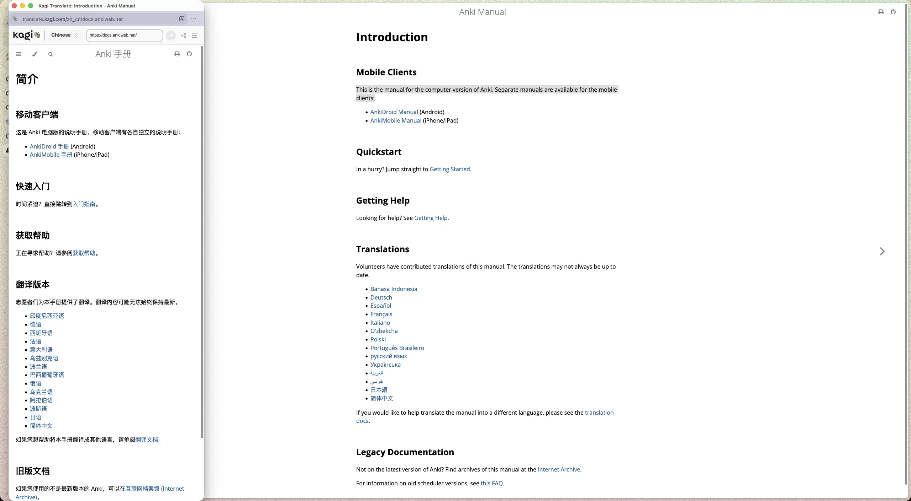

用 Tamper-monkey 集成 Kagi Translate
以及用 Docker Sandbox 使用 OpenCode 和 DeepSeek
我現在主要用 Kagi Translate 閱讀外文， Kagi Translate 提供了 瀏覧器插件，有三個我常用的功能： 1) 網頁全文翻譯 2) 選擇內容翻譯 3) 字典定義。但插件很久沒更新了，最近用下來也有兩個很影响使用的地方：
- 網頁翻譯有時會吞掉一些文章內容；有的段落可能只翻譯了一兩個單詞。原來我可以打開一堆頁面，然後全部翻譯，哪個翻譯好了我就看哪個，現在我還要檢查內容是否完整，用起來提心吊胆的。而且重新翻譯也未必有用，它是有緩存的，先要清空插件的緩存後才能触發新的翻譯，但清除緩存重新請求也未必正常，有時我需要切換目標語言或不同的翻譯質量才行。總之就是不穩定，不能放心地用。
- 除了全文翻譯，我有時也會用到字典功能，去了解一個我不認識的單詞，但現在查詢結果經常是空白一片，也不清楚是什麼問題。唯一比較穩定的就是選擇內容翻譯了。
Kagi Translate 的網頁功能倒是一直在更新，每過几天就提示我刷新頁面获取新版本，網頁上也有一些插件上沒有的功能。於是我就想，網頁是相對稳定的，我能不能就用網頁功能呢？借助 Tampermonkey，我把 Kagi Translate 網頁塞在一個彈窗裡，通過快捷鍵調用，我用下來還挺滿意的。
下面分享一下整體功能。
{kind=link}

使用網頁版的字典可以看到更多信息，也支持將單詞存到 Anki 裡複習。我挺喜歡集成的 Anki 功能的，但是插件裡沒有這個功能，只有網頁版有。之前我需要複製單詞，打開網頁才能用，用起來有些麻煩，所以我也很少用。現在我可以在任意頁面上直接調用，方便多了，這兩天用下來，新增了上百個單詞(不熟悉的單詞太多了)。單詞是從我閱讀的文章中获取的，相比那些預製的單詞集，它們更貼近我當前的水平，複習時也會更親切些，對它們也還留有一些印象。
{kind=link}

因為打開的窗口比較細長，原始樣式下 Send to Anki 在最下面，需要多滾動一下才能看見，為了方便，我用 openstyles/stylus 覆盖了 Anki 彈窗的樣，隱藏了一些我不需要的信息，現在 Send to Anki 就可以直接在頁面上點擊了。
相關覆盖樣式
應用在 https://translate.kagi.com/dictionary ，隱藏了 Preview 部分。
@media screen and (width <=700px) {
.modal-container[data-modal-id="Export to Anki"] [role="dialog"] > div:nth-child(2) > div:first-child > div:nth-child(2) {
display: none;
}
}
{kind=link}

翻譯也比插件功能更丰富，例如我可以悬浮在原文上，查看每個單詞和翻譯的映射，也有更多的翻譯選項可用。
{kind=link}

網頁翻譯我現在用的比較少，主要是不太穩定，網頁版也會出現吞掉內容的情况。但我閱讀英文還是有些吃力，也有點慢，如果文章很長、我又不是很感興趣，或者我想速讀，我還是會用全文翻譯。
以上就是大致的功能了，如果你感興趣的話，這是相關代碼： kagi-translate.user.js。安裝 Tampermonkey 後，點擊代碼連結，在頁面上點 Raw 按鈕，應該就會触發安裝了，具體用法可以看代碼注釋。裡面的快捷鍵是我習慣的，你可以改成自己習慣的。為了能快速關閉彈窗，最好也了解一下瀏覧器關閉窗口的快捷鍵。需要注意的是 Kagi Translate 只有訂閱了 Kagi 才能用。
接下來我分享一些實現上的細節。
我最初的想法是用 Tampermonkey 获取頁面需要翻譯的文本 (選中部分)，在頁面上插入一個 iframe，裡面嵌入網頁版的 Kagi Translate。 Kagi Translate 本身是支持用 URL 去調用的，拼接好查詢的 URL 就行。除此之外，iframe 應該是能關閉、拖動、縮放窗口大小的，再用 Tampermonkey 捕获快捷鍵，理論上用起來應該和插件是差不多的。
用 Tampermonkey 寫，需要符合 Tampermonkey 語法、調用 DOM API 實現 DOM 的生成和插入、還有樣式和拖動等交互，手寫還是有些工作量的，也要看不少文檔了解用法，就偷懶借助 OpenCode 生成了一個原型，在文章的最後我還會分享一下如何用 Docker Sandbox 運行和配置 OpenCode 和 DeepSeek。
生成的第一個原型是用 iframe 實現的，但因為 跨域，Kagi Translate 的網頁被瀏覧器攔截了，沒法加載出來。 DeepSeek 給的另一個方法是用 window.open() 打開一個彈窗去加載，因為是在一個新窗口，就不會有跨域問題。試了試，基本能用了，之後我就接手過來，一邊用，一邊調整代碼，直到滿足我的使用。
我花時間比較多的是調整 window.open 的效果。
window.open 的第二個參數是 target，要求是沒有空格的字符串。當存在相同 target 的 Window 實例時， window.open 就可以複用這個實例，這樣一個頁面就只有一個實例，也就只有一個彈窗，避免多次調用產生一堆不同的彈窗。如果你希望用多個彈窗呈現，那就在調用 window.open 時，讓 target 的值每次都不一樣。
想要 window.open 用彈窗而不是在一個新的 Tab 打開，需要設置第三個參數 windowFeatures，這也是一個字符串，多個屬性用 , 分隔，例如： "left=100,top=100,width=320,height=320" 。設置 popup 或 popup 相關屬性為 true 就能以彈窗形式打開 URL。
此外還能設置定位，但我將 left 設置為 0 或負數，只能讓彈窗盡可能靠左，還會有一些空白，不太清楚原因，可能和系統或瀏覧器有關。關於 left，是這麼描述的：
Specifies the distance in pixels from the left side of the work area as defined by the user's operating system where the new window will be generated.
不清楚這裡的 work area 定義是什麼。
通過 width 和 height 可以大致控制窗口尺寸，為了盡量不遮擋正文，寛度我設置得比較小，而高度則盡可能高，占滿頁面高度，從而多顯示一些內容。所幸 Kagi Translate 的頁面响應性做得很好，寛度小也不影響使用。實際用下來，我發現寛高會受到頁面縮放比例影響，例如 width 設置為 100px，頁面放大為 120%，那麼最終的窗口寛度會接近 120px。這樣會有個問題，我經常要放大頁面，放大字體閱讀，本來預設的寬度是不會遮擋的，但現在窗口基於頁面縮放比例變寛了，就遮擋了。應對的方法是，在設置寛度時，現預先移除縮放比例的影響，具體來說就是利用 devicePixelRatio 先預处理一下寛度：features.width = features.width / window.devicePixelRatio; 。
還留了一些沒解决的問題：
- 集成了 Kagi Summarizer，但它沒法用彈窗呈現(不會出現)，總是會在新的 Tab 打開。具體原因我還不清楚，如果你知道原因請告訴我 (我很好奇！.gif)。我用 OpenCode 和 DeepSeek Pro 排查了一些可能，它給的方案我都試了，都不能用彈窗打開，還是會用 Tab 打開。我猜測是 Kagi 收到請求後做了什麼处理，但不清楚原理。
- 集成了 website，即頁面全文翻譯，當翻譯的 URL 帯有 query 參數時，例如 https://example.com/posts.php?index=9527，
website 的參數如
?to=zh或&to=zhKagi Translate 識別不了，這些參數會被當作要翻譯的 URL 的參數(如果安裝了 Kagi Translate 的插件的話，website 的功能會被插件接管，插件倒是能处理)。
這個方法也是有缺陷的：
- 它可能會產生很多臨時的窗口，需要手動去關閉維护；
- 反复訪問 Kagi Translate 的 URL，也會產生很多 Kagi Translate 的歷史記录󠄃；
- 彈窗也可能會被瀏覧器攔截，需要允許彈窗。
回頋一下，其實做的事很簡單：選擇頁面內容，拼接成目標 URL，然後彈窗展示結果。這裡的 URL 可以是 Kagi Translate，也可以是任意支持參數查詢的 URL，例如 Wikipedia、MDN。
最後分享一下如何用 Docker Sandbox 使用 OpenCode 和 DeepSeek。
我之前安裝過 OpenCode，但沒做沙箱隔离，總覺得很不安全。 Simon Willison 提出過 AI 代理程式的致命三要素： 1）它能够訪問私有數據 2）它可能會接触到惡意內容 3) 它具備可用於竊取數據的外部通訊能力。如果滿足這三個條件，攻擊者就可以輕易地誘騙它存取您的私有數據並將其發送給該攻擊者。
OpenCode 拥有我本地文件的讀寫能力，它還有 websearch 的能力，如果它在查詢資料時受到了提示詞注入攻擊，可能會在我不知情下，泄露了我的數據，所以後來我就卸載了。
更安全的做法是把它隔离在一個沙箱裡，最好的沙箱是一台干净的、沒有敏感數據的電脑，隨它怎麼折騰也不會有太大風險。
我沒有一台閒置的電脑，就只好用提供沙箱环境的軟件做隔离了(你是怎麼隔离的？現在普遍做法是什麼呢？)。前陣子了解到 Docker Sandbox，提供了一個操作相對方便的沙箱，我這次就是用 Docker Sandbox 運行 OpenCode 的。
Docker Sandboxes run AI coding agents in isolated microVM sandboxes. Each sandbox gets its own Docker daemon, filesystem, and network — the agent can build containers, install packages, and modify files without touching your host system.
Docker Sandbox 目前支持了一些 常見的 Agent，例如 Claude Code、Codex、OpenCode，但還不够全，我想用的 earendil-works/pi 它還不支持，不過可以也 自行構建。
下面分享一下在 macOS 上用 Docker Sandbox 使用 OpenCode 和 DeepSeek。
0.安裝
brew trust docker/tap && brew install docker/tap/sbx
1.登录󠄃
sbx login
我認為一個 CLI 工具是不需要登录󠄃的，但 Docker 可能是要向用戶銷售服務，需要關聯用戶，它強製要求登录󠄃才能用。
2.設置 DeepSeek API
Docker Sandbox 默認不支持 DeepSeek，需要用 set-custom 去設定：
sbx secret set-custom \
--host api.deepseek.com \
--env DEEPSEEK_API_KEY \
--value <your-deepseek-api-key>
如果你是這麼設置的， API Key 會殘留在 History 裡，記得清除對應的 History，避免暴露 API Key。你也可以用 --command 去讀取，避免內聯的明文 API Key，具體見 Manage credentials。
3.允許 Deepseek API 連接網絡
sbx policy allow network api.deepseek.com
通過 sbx policy 可以控製一些 sandbox 的權限，例如網絡訪問，可以避免 LLM 訪問不信任的網站，更多見 Policy concepts。
4.運行 Opencode
sbx run opencode
在 OpenCode 裡選 DeepSeek 的 Model 就能正常用了。
默認它的網絡是受限的，你可以將 Sandbox Policy 的 Default Preset 設為 Balanced，默認拒絕網絡訪問，但允許常見的 package managers (NPM, PyPI 等), code hosts (GitHub, GitLab 等) 等訪問網絡。
如果要放開更多的網絡訪問，就用 sbx policy allow network <domain> 去設置。也可以直接用 sbx 喚起一個可交互的 TUI，在裡面設置 (推薦)。
Sandbox 默認只能訪問你掛載的目录󠄃，例如你在 ~/git/repo 下運行 sbx run opencode ，那它就只能訪問 ~/git/repo 目录󠄃，有讀寫能力。如果你還不放心，也可以用 Clone Mode，這樣 OpenCode 會將倉庫 Clone 到 Sandbox 裡改，改好了你再从 Sandbox 裡 fetch 到本地，會更安全些。更多用法就自己看 文檔 吧 :)
感謝你讀到這裡，希望文章內容對你有帮助啦，有問題也歡迎 Email 交流 :)